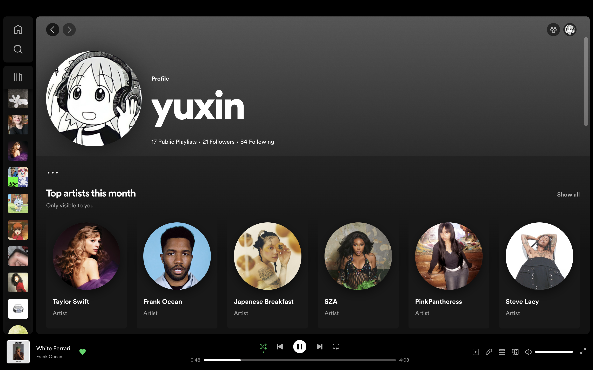
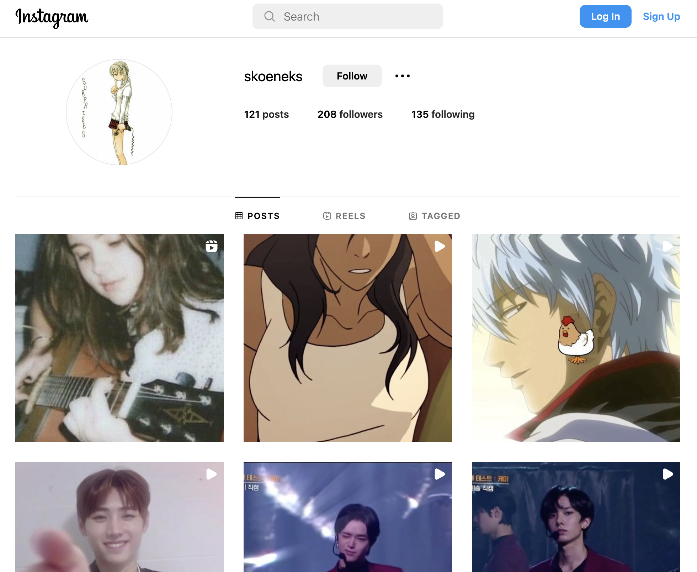
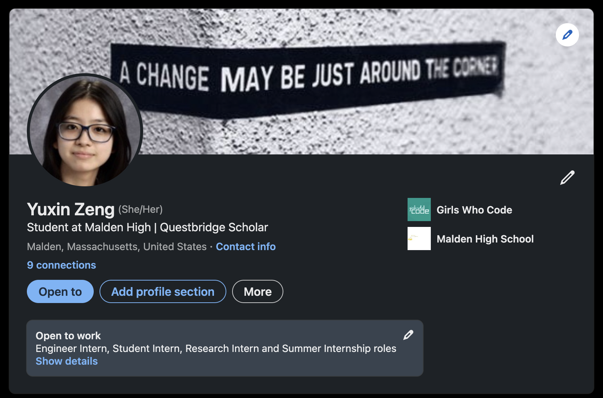

Last year, I took an engineering class and was able to get the basics down for how to code a Microbit! For my collective group project, we created a hands-on Microbit game that was inspired by the toy Bop It. This was the start to my fascination for programming and technology.
As mentioned before, I love listening to all kinds of music and playing different instruments! One of my hobbies is building playlists for different occasions and moods, and making general collections of my favorite pieces! My current favorite musicians are Taylor Swift and New Jeans!
I make little edits on my very phone using the apps Alight Motion and Cute Cut Pro and post them on my Instagram account! This hobby is another way for me to express myself creatively, and I've been making video edits since middle school!
Want to know more about me and my experiences? Look through my LinkedIn and feel free to contact me!